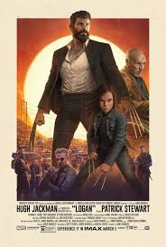

CINE LA MIRADA
Pelicula de el mes
LOGAN

Es el año 2029. Los mutantes prácticamente han desparecido. Un cansado y abatido Logan (Hugh Jackman) vive retirado en la ciudad mexicana de El Paso. Es una sombra de lo que era. Se gana la vida conduciendo limusinas y se emborracha más de la cuenta. Su compañero en el exilio es el Profesor Charles Xavier (Patrick Stewart), también en las últimas, ya que está enfermo, inválido y con sus facultades mentales deterioradas. Logan cuida de él.
Pero los intentos de Logan por ocultarse del mundo y olvidar su legado terminarán con la aparición de la joven Laura Kinney (Dafne Keen), también conocida como X-23, una niña que parece tener sus mismos poderes, y que está siendo perseguida por fuerzas oscuras. Esto obligará a Logan a enfrentarse a un villano de su antiguo pasado en una misión a vida o muerte.
Logan es la nueva película de Lobezno, después de X-Men Orígenes: Lobezno (2009) y Lobezno inmortal (2013). Esta tercera entrega sobre el mutante más legendario de la saga X-Men cuenta con James Mangold (Lobezno inmortal, Noche y Día, El tren de las 3:10) como director. Sus protagonistas son Hugh Jackman (Pan: Viaje a Nunca Jamás, Chappie, X-Men: Días del futuro pasado) como Logan, Patrick Stewart (Blunt Talk, Ted 2, Lobezno inmortal) como el Profesor Charles Xavier, Boyd Holbrook (Narcos, La venganza de Jane) como Donald Pierce y la joven Dafne Keen (Refugiados) como Laura Kinney.
Horarios
- 12:30am
- 2:30pm
- 4:30pm
- 6:30pm
- 8:30pm
- 10:30pm